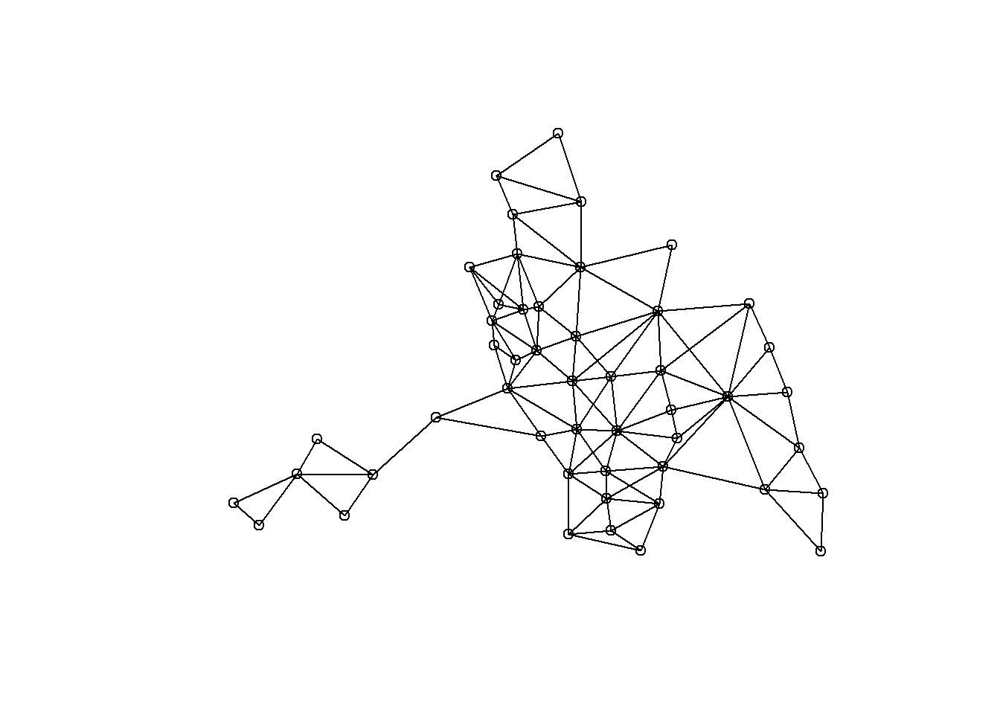

4 Networks as causes: Spatial regression analysis
4.1 Constructing a Spatial Weight Matrix
We continue with the example from the lecture: we are interested in whether household income has an effect on the crime rate using neighborhood data. We control for house prices as house prices are correlated with both household income and crime rates.
We use Anselinâs Columbus data for crime rates of neighborhoods in Columbus, Ohio, USA in 1980. The codebook can be found here: https://geodacenter.github.io/data-and-lab/columbus/
The data are already part of the spdep package and we obtain the data as follows:
Instead of using the tedious dollar sign every time we type a variable, we can attach the data and just type the variable:
There are 49 neighborhoods in the data. Our dependent variable is the crime rate, measured as residential burglaries and vehicle thefts per 1000 households: CRIME. Our independent variable is the household income in 1,000 USD: INC. Our control variable is the housing value in 1,000 USD: HOVAL.
Col.gal.nb provides an adjacency list of neighbors. We give it a better name:
We check the class of the adjacency list:
## [1] "nb"Note that it is an ‘nb’ or ‘neighborhood’ object. In spatial regression analysis, you need a so-called ‘weighted list - listw’ object. To arrive to a listw object, often it is easiest to first convert a dataframe to ‘nb’.
You can do this simply with the command class(dataframe) <- “nb”. And then, we can use nb2listw(nblist).
Another approach (which is more suitable when having isolates) is to first make an adjacency matrix. Then you can use mat2listw(adjacencymatrix).
In this case, however, we already have an nb object. So the only thing we need to do is to go to a listw object. We specify style ‘W’ to row-standardize:
## Characteristics of weights list object:
## Neighbour list object:
## Number of regions: 49
## Number of nonzero links: 230
## Percentage nonzero weights: 9.579342
## Average number of links: 4.693878
## Link number distribution:
##
## 2 3 4 5 6 7 8 9 10
## 7 7 13 4 9 6 1 1 1
## 7 least connected regions:
## 1005 1008 1045 1047 1049 1048 1015 with 2 links
## 1 most connected region:
## 1017 with 10 links
##
## Weights style: W
## Weights constants summary:
## n nn S0 S1 S2
## W 49 2401 49 23.48489 204.6687We see that an average region has about 5 neighbors.
4.2 Linear Regression Analysis
We now turn to a linear regression model using OLS. ALWAYS START WITH THE EASIEST MODEL! The easiest model is more often than not sufficient for the main analyses. Before we estimate the model, let’s first summarize the variables:
## Min. 1st Qu. Median Mean 3rd Qu. Max.
## 0.1783 20.0485 34.0008 35.1288 48.5855 68.8920## Min. 1st Qu. Median Mean 3rd Qu. Max.
## 4.477 9.963 13.380 14.375 18.324 31.070## Min. 1st Qu. Median Mean 3rd Qu. Max.
## 17.90 25.70 33.50 38.44 43.30 96.40Nothing seems out of the ordinary.
Now we would like to plot the neighborhoods to visualize the network. Coordinates of each neighborhood are provided in ‘coords’.

We observe that some neighborhoods serve as bridges between neighborhoods that are distant from each other. Let’s now run a linear regression model:
##
## Call:
## lm(formula = CRIME ~ INC + HOVAL)
##
## Residuals:
## Min 1Q Median 3Q Max
## -34.418 -6.388 -1.580 9.052 28.649
##
## Coefficients:
## Estimate Std. Error t value Pr(>|t|)
## (Intercept) 68.6190 4.7355 14.490 < 2e-16 ***
## INC -1.5973 0.3341 -4.780 1.83e-05 ***
## HOVAL -0.2739 0.1032 -2.654 0.0109 *
## ---
## Signif. codes: 0 '***' 0.001 '**' 0.01 '*' 0.05 '.' 0.1 ' ' 1
##
## Residual standard error: 11.43 on 46 degrees of freedom
## Multiple R-squared: 0.5524, Adjusted R-squared: 0.5329
## F-statistic: 28.39 on 2 and 46 DF, p-value: 9.341e-09Higher household income and higher housing values lead to a significantly lower crime rate.
However, we did not take the spatial dependence into account and our hypothesis tests may lead to erroneous conclusions.
4.3 Spatial Analysis
4.3.1 Moran’s I test
##
## Moran I test under randomisation
##
## data: CRIME
## weights: listw
##
## Moran I statistic standard deviate = 5.3427, p-value = 4.578e-08
## alternative hypothesis: greater
## sample estimates:
## Moran I statistic Expectation Variance
## 0.485770914 -0.020833333 0.008991121p-value is very small so we reject the null hypothesis of no spatial dependence. We should not use a linear regression.
4.3.2 Lagrange multiplier tests for spatial lag and spatial error dependencies
## Please update scripts to use lm.RStests in place of lm.LMtests##
## Rao's score (a.k.a Lagrange multiplier) diagnostics for spatial
## dependence
##
## data:
## model: lm(formula = CRIME ~ INC + HOVAL)
## test weights: listw
##
## RSerr = 4.6111, df = 1, p-value = 0.03177
##
##
## Rao's score (a.k.a Lagrange multiplier) diagnostics for spatial
## dependence
##
## data:
## model: lm(formula = CRIME ~ INC + HOVAL)
## test weights: listw
##
## RSlag = 7.8557, df = 1, p-value = 0.005066We reject both hypotheses. It appears that we should use both a spatial lag and a spatial error model.
4.3.3 Spatial lag model
##
## Call:lagsarlm(formula = CRIME ~ INC + HOVAL, data = mydata, listw = listw,
## Durbin = "FALSE")
##
## Residuals:
## Min 1Q Median 3Q Max
## -37.4497093 -5.4565567 0.0016387 6.7159553 24.7107978
##
## Type: lag
## Coefficients: (asymptotic standard errors)
## Estimate Std. Error z value Pr(>|z|)
## (Intercept) 46.851431 7.314754 6.4051 1.503e-10
## INC -1.073533 0.310872 -3.4533 0.0005538
## HOVAL -0.269997 0.090128 -2.9957 0.0027381
##
## Rho: 0.40389, LR test value: 8.4179, p-value: 0.0037154
## Asymptotic standard error: 0.12071
## z-value: 3.3459, p-value: 0.00082027
## Wald statistic: 11.195, p-value: 0.00082027
##
## Log likelihood: -183.1683 for lag model
## ML residual variance (sigma squared): 99.164, (sigma: 9.9581)
## Number of observations: 49
## Number of parameters estimated: 5
## AIC: 376.34, (AIC for lm: 382.75)
## LM test for residual autocorrelation
## test value: 0.19184, p-value: 0.66139Again a significantly negative effect of household income and housing values on the crime rate. Coefficients are very similar to the OLS coefficients. This is often the case given that OLS coefficients are most often still unbiased. The spatial parameter rho is positive and significant showing dependence.
We now turn to the direct and indirect effects. For this purpose, we follow the approximation method by Lesage and Pase (2009) . We specify ‘zstats = TRUE’ to obtain p-values. We use a simulation with 200 iterations to obtain p-values.
im<-impacts(slm, listw = listw, zstats=TRUE, R=200)
sums<-summary(im, zstats=T)
data.frame(sums$res)## direct indirect total
## 1 -1.1225156 -0.6783818 -1.8008973
## 2 -0.2823163 -0.1706152 -0.4529315## Direct Indirect Total
## INC 0.0003880872 0.0499007 0.0009257561
## HOVAL 0.0019892129 0.1166526 0.0133474689Although both total effects are significant, they are mainly driven by direct effects.
4.3.4 Spatial error model
##
## Call:errorsarlm(formula = CRIME ~ INC + HOVAL, data = mydata, listw = listw,
## Durbin = FALSE)
##
## Residuals:
## Min 1Q Median 3Q Max
## -34.45950 -6.21730 -0.69775 7.65256 24.23631
##
## Type: error
## Coefficients: (asymptotic standard errors)
## Estimate Std. Error z value Pr(>|z|)
## (Intercept) 61.053618 5.314875 11.4873 < 2.2e-16
## INC -0.995473 0.337025 -2.9537 0.0031398
## HOVAL -0.307979 0.092584 -3.3265 0.0008794
##
## Lambda: 0.52089, LR test value: 6.4441, p-value: 0.011132
## Asymptotic standard error: 0.14129
## z-value: 3.6868, p-value: 0.00022713
## Wald statistic: 13.592, p-value: 0.00022713
##
## Log likelihood: -184.1552 for error model
## ML residual variance (sigma squared): 99.98, (sigma: 9.999)
## Number of observations: 49
## Number of parameters estimated: 5
## AIC: 378.31, (AIC for lm: 382.75)Again a significantly negative effect of household income and housing values on the crime rate. The spatial parameter lambda is positive and significant showing dependence.
4.3.5 Spatial autoregressive combined model
##
## Call:sacsarlm(formula = CRIME ~ INC + HOVAL, data = mydata, listw = listw,
## Durbin = FALSE)
##
## Residuals:
## Min 1Q Median 3Q Max
## -37.1121 -4.6324 -0.3040 7.0306 24.6929
##
## Type: sac
## Coefficients: (asymptotic standard errors)
## Estimate Std. Error z value Pr(>|z|)
## (Intercept) 49.051432 10.054986 4.8783 1.07e-06
## INC -1.068781 0.332839 -3.2111 0.001322
## HOVAL -0.283114 0.091526 -3.0933 0.001980
##
## Rho: 0.35326
## Asymptotic standard error: 0.19669
## z-value: 1.796, p-value: 0.072494
## Lambda: 0.13199
## Asymptotic standard error: 0.29905
## z-value: 0.44138, p-value: 0.65894
##
## LR test value: 8.6082, p-value: 0.013513
##
## Log likelihood: -183.0731 for sac model
## ML residual variance (sigma squared): 99.423, (sigma: 9.9711)
## Number of observations: 49
## Number of parameters estimated: 6
## AIC: 378.15, (AIC for lm: 382.75)Similar results, but rho is now not significant.
4.3.6 Spatial Durbin model
##
## Call:lagsarlm(formula = CRIME ~ INC + HOVAL, data = mydata, listw = listw,
## Durbin = TRUE)
##
## Residuals:
## Min 1Q Median 3Q Max
## -37.15904 -6.62594 -0.39823 6.57561 23.62757
##
## Type: mixed
## Coefficients: (asymptotic standard errors)
## Estimate Std. Error z value Pr(>|z|)
## (Intercept) 45.592893 13.128679 3.4728 0.0005151
## INC -0.939088 0.338229 -2.7765 0.0054950
## HOVAL -0.299605 0.090843 -3.2980 0.0009736
## lag.INC -0.618375 0.577052 -1.0716 0.2838954
## lag.HOVAL 0.266615 0.183971 1.4492 0.1472760
##
## Rho: 0.38251, LR test value: 4.1648, p-value: 0.041272
## Asymptotic standard error: 0.16237
## z-value: 2.3557, p-value: 0.018488
## Wald statistic: 5.5493, p-value: 0.018488
##
## Log likelihood: -182.0161 for mixed model
## ML residual variance (sigma squared): 95.051, (sigma: 9.7494)
## Number of observations: 49
## Number of parameters estimated: 7
## AIC: 378.03, (AIC for lm: 380.2)
## LM test for residual autocorrelation
## test value: 0.101, p-value: 0.75063We see that the results are similar and the lags are not significant.
4.3.7 Spatial Durbin error model
##
## Call:errorsarlm(formula = CRIME ~ INC + HOVAL, data = mydata, listw = listw,
## Durbin = TRUE)
##
## Residuals:
## Min 1Q Median 3Q Max
## -37.02060 -6.68585 -0.15142 6.51557 24.18199
##
## Type: error
## Coefficients: (asymptotic standard errors)
## Estimate Std. Error z value Pr(>|z|)
## (Intercept) 73.258655 8.528044 8.5903 < 2.2e-16
## INC -1.069530 0.324719 -3.2937 0.0009887
## HOVAL -0.280344 0.091809 -3.0535 0.0022615
## lag.INC -1.196774 0.568968 -2.1034 0.0354297
## lag.HOVAL 0.146758 0.200872 0.7306 0.4650196
##
## Lambda: 0.37613, LR test value: 3.7313, p-value: 0.053403
## Asymptotic standard error: 0.16554
## z-value: 2.2721, p-value: 0.023079
## Wald statistic: 5.1626, p-value: 0.023079
##
## Log likelihood: -182.2329 for error model
## ML residual variance (sigma squared): 96.022, (sigma: 9.7991)
## Number of observations: 49
## Number of parameters estimated: 7
## AIC: 378.47, (AIC for lm: 380.2)Results are again similar, but now the lag of household income is significant.
4.3.8 General nested model
##
## Call:sacsarlm(formula = CRIME ~ INC + HOVAL, data = mydata, listw = listw,
## Durbin = TRUE)
##
## Residuals:
## Min 1Q Median 3Q Max
## -37.36766 -6.68648 -0.44936 6.38015 23.80258
##
## Type: sacmixed
## Coefficients: (asymptotic standard errors)
## Estimate Std. Error z value Pr(>|z|)
## (Intercept) 50.35976 63.33587 0.7951 0.426542
## INC -0.96203 0.43539 -2.2096 0.027135
## HOVAL -0.29462 0.10275 -2.8674 0.004139
## lag.INC -0.72000 1.61312 -0.4463 0.655352
## lag.HOVAL 0.24470 0.26967 0.9074 0.364187
##
## Rho: 0.31731
## Asymptotic standard error: 0.87681
## z-value: 0.36189, p-value: 0.71743
## Lambda: 0.090483
## Asymptotic standard error: 1.0184
## z-value: 0.088845, p-value: 0.92921
##
## LR test value: 10.756, p-value: 0.029453
##
## Log likelihood: -181.9994 for sacmixed model
## ML residual variance (sigma squared): 95.975, (sigma: 9.7967)
## Number of observations: 49
## Number of parameters estimated: 8
## AIC: 380, (AIC for lm: 382.75)Similar results again.
4.4 Knecht Assignment
We are interested in whether there are sex differences in homework.
- Open the dataset “PupilsWaveV.dta”.
- Estimate a linear regression model of doing homework (acthomew) on sex (sex) while controlling for age (age). For this purpose, reverse the scale of acthomew so a higher value means more likely to do homework. Also, reverse the coding of sex and create a dummy variable so 1 is female and 0 is male. This is more in line with the literature.
- Estimate a multilevel linear model where you take class characteristics into account.
- In addition to gender differences, we are now also interested in whether peers influence one’s homework behavior. From now on consider only Class 12b. Construct an adjacency matrix of best friends.
- Construct a row-standardized spatial weight matrix as a weights list object.
- Conduct and interpret the Moran’s I test and the Lagrange multiplier tests. Set the option ‘zero.policy’ to TRUE because you have isolates.
- Estimate a SLM and the impacts. Interpret the results.
- Estimate a SEM and a SAC. Interpret the results.
- Estimate a SDM, SDEM, and GNM. Interpret the results.
- What is your conclusion after interpreting all these models?